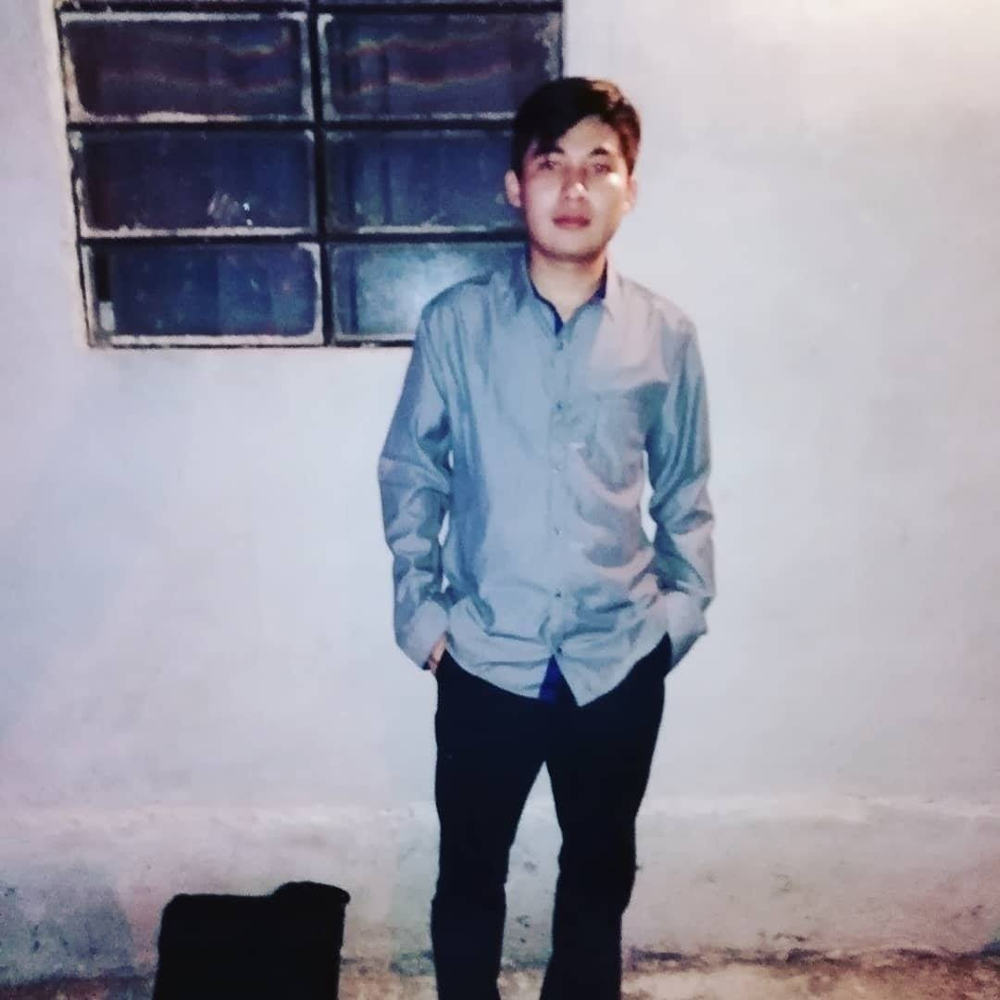

MI CURRICULUM VITAE
Eduardo de Jesus Esparza Sanchez
EGRESADO DEL INSTITUTO TECNOLOGICO DE MERIDA EN LA CARRERA DE INGENIERIA EN SISTEMAS COMPUTACIONALES
Perfil Personal
Gran motivación para seguir perfeccionando mis habilidades en el área de programación. Confió plenamente en mi capacidad de adaptarme en el trabajo que se me presente y dar lo mejor de mi.
Contacto
C: 86 #370A x 165 y 167 Emiliano Zapata Sur 3
eduardoesparza97@hotmail.com
9993909504
Perfil de LInkedinFormacion Academica
- Instituto Tecnologico de Merida Ingenieria en Sistemas Computacionales Recien Egresado
- Colegio de Estudios Cientificos y Tecnologicos de Merida (CECYTE) Tecnico en Soporte y Mantenimiento de Equipos de Computo 2013 al 2016
Skill
- Manejo de Lenguajes de Programacion: Python, java, PHP
- Programacion web: HTML, CSS, JavaScript
- Base de Datos: Mysql, sql
- Autodidacta
- Trabajo en Equipo
- Gestion del Tiempo
Experiencia Laboral
LOGISMIC S DE RL DE CV - Ingeniero Software Trainer
ABRIL 2021 - ACTUALMENTE
- Analizar, diseñar, codificar y probar requerimientos/items utilizando una metodología de desarrollo de software ágil.
- Refactorizar código existente para facilitar su mantenimiento, comprensión y escalabilidad.
- Optimizar el rendimiento y resolver defectos de los sistemas.
- Desarrollo de pruebas unitarias.
- Corrección de fallas y defectos.
Proyecto Solucion del VRP en el CIMAT-MERIDA
AGOSTO 2020 - FEBRERO 2022
- Programando solucion del Problema del VRP con enfoque en Programacion Lineal, Heuristicas y Metaheuristicas.
- Programacion Dinamica y Estructuras de Datos con c, java y python
- Realizacion de Reportes
- Asistencia a Conferencias y Talleres.
Técnico en Soporte y Mantenimiento de Equipo de Computo
ENTRE EL 2013 AL 2016
- Mantenimiento Preventivo y Correctivo
- Instalación y Actualización de Software
- Cambio de Componentes
- Optimización del Sistema Operativo
- Limpieza en General